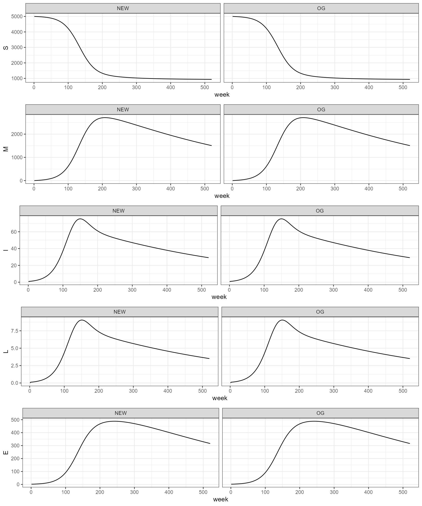
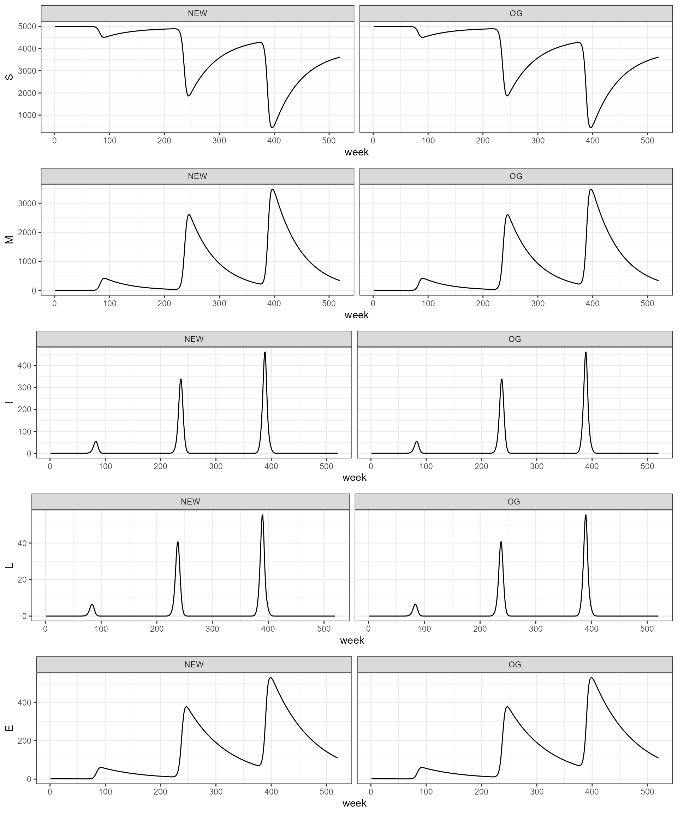
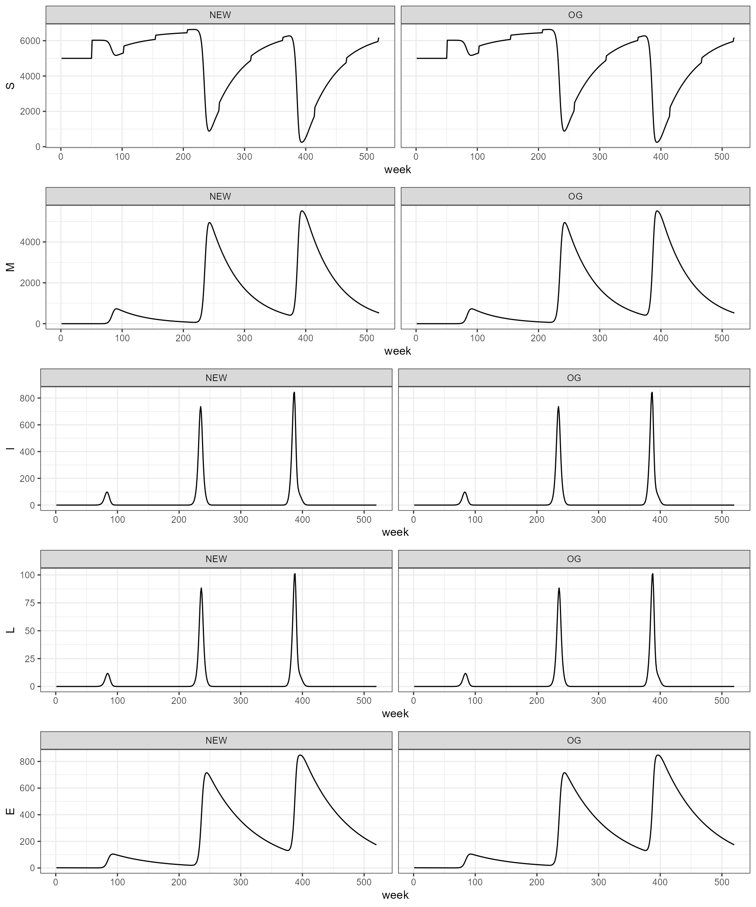
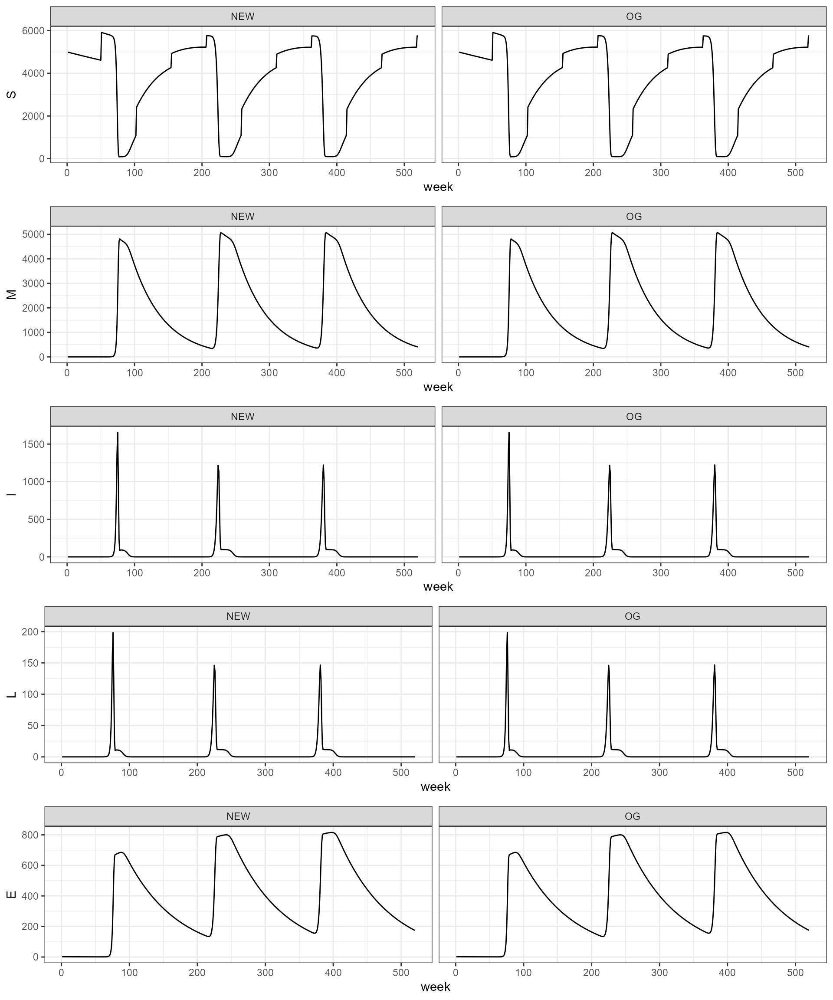
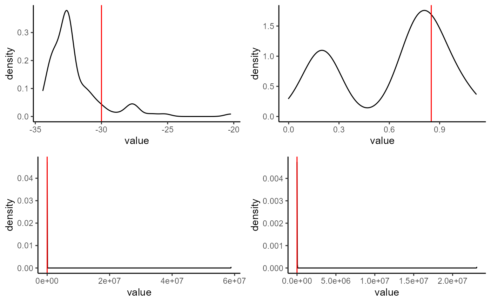
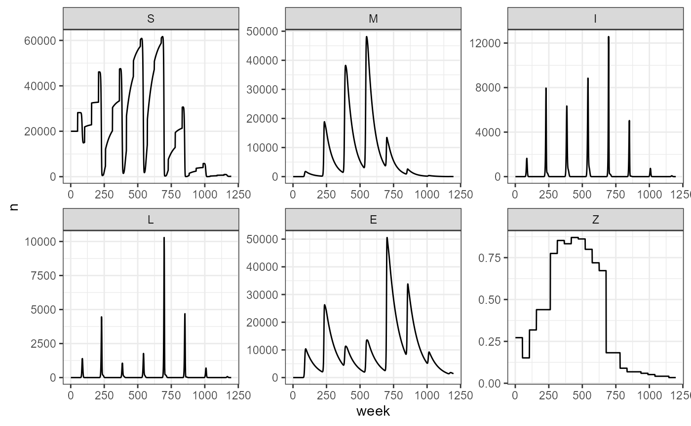
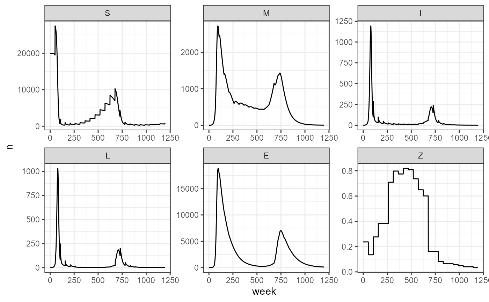

old_vs_new
old_vs_new.RmdTesting if the new function can recreate all the previous scenarios and new ones. Having a main function will help with the iteration and testing of the vaccine scenarios.
# OG functions
# This code is the source of functions that define the SMILE model.
# It is a compilation of functions required to evalluate the model with different
# assumptions starting from the determinisitc simple model withou population dynamics
# or seasonal forcing and ending with the stochastic version of the model with
# population dynamics and seasonal forcing. It also includes some useful functions
# evaluated inside the functions to simulate the time series.
# Finally I provide the functions required to estimate the parameters of the model
# using maximum likelihood optimization through the optim function.
# Author: Juan Pablo Gomez
# Version 1.1.
# Last revised: March 7 2018.
#################################
# Infection probability based on Ponciano and Capistran 2011.
lambda.t <- function(theta,tau,b,E){
1-(theta/(theta+b*E))^tau
}
# Introducing seasonality in the infection probability through b.
b.season <- function(b0,b1,period,t){
exp(b0*(1+b1*cos((2*pi*t)/period)))
}
# Density dependent reproduction
rho.n <- function(N){
0.41/(1+(N/5000)^(10))
}
# First case of R0
r0 <- function(b,E,theta,tau){
(b*E*tau)/theta
}
# Function to simulate climatic variable
# a = upper asymptote
# c = lower asymptote
# b = time required to reach half of the climatic maxima
# d = time at which the mid point between max and minimum climate is reached.
clim.func <- function(a,c,d,d2,b,b2,t,sd){
if(missing(b2)){b2 <- b}
if(missing(c)){c<-0}
det.clim <- ((a-c)/(1+exp((d-t)/b)) - (a-c)/(1+exp((d2-t)/b2))) + c
rand.clim <- rnorm(length(t),det.clim,sd=sd)
return(rand.clim)
}
# Function used to estimate seasonality in infection probability using climatic variables
# wt.bar = mean of climatic covariable
# b0 = as in b.season
# b1 = as in b.season
# kw = scaling coefficient
# t = time
# period = as in b.season
infect2clim <- function(wt.bar,b0,b1,kw,t,period){
wt.bar + ((b0*b1)/kw)*cos((2*pi*t)/period)
}
# Function of SMILE without any age structuring
# This is the most basic SMILE function in which I have assumed no population dynamics
# and no deaths other than disease related.
# Fixed parameters are:
# alpha= 1/52 Probability of an immune individual to become Suceptible
# zeta = 0.88 Probability that an Infected individual becomes immune
# gamma= 0.9868 Spore decay probability
# psi = 1 Number of spores in one LIZ
# Variable parameters
# b: Number of infections caused by one LIZ if there was no dispersion effort
# tau and theta: Shape and Rate parameters of the gamma distribution defining dispersion effort.
smile1 <- function(b,theta,tau,years){
# Fixed parameters
alpha <- 1/52
zeta <- 0.88
gamma <- 0.9868
psi <- 1
n.weeks <- years*52 + 1
S<- M<- I<- L<-E <-N<-lambda<- array(0,dim=c(n.weeks),dimnames=list(1:(n.weeks)))
N[1] <- 5000
S[1] <- N[1]
L[1] <- 1; E[1] <- L[1]*psi
for(t in 2:n.weeks){
tm1 <- t-1
lambda[tm1] <- lambda.t(theta=theta,tau=tau,b=b,E=E[tm1])
S[t] <- (S[tm1]*(1-lambda[tm1])) + M[tm1]*1/52
I[t] <- S[tm1]*lambda[tm1]
M[t] <- I[tm1]*zeta + M[tm1]*(1-(1/52))
L[t] <- I[tm1]*(1-zeta)
E[t] <- psi*L[tm1] + E[tm1]*gamma
N[t] <- S[t]+M[t]
}
results <- list(Suceptibles=S[-1]
,Immune=M[-1]
,Infected=I[-1]
,LIZ=L[-1]
,Environment=E[-1]
,lambda=lambda[-1])
return(results)
}
# This function simulates anthrax disease dynamics without host population dynamics
# but infection probability has seasonal forcing.
# Fixed parameter are the same as in smile1 function.
# Variable parameters tau and theta are also the same and b0, b1 and period
# introduce seasonality to the infection probability by modifying b. In this function
# I assume that seasonality is product of an exponential cosine function where the intensity
# of the seasonality is given by b0*b1 and period gives the periodicity of the outbreak
# tau and theta: Shape and Rate parameters of the gamma distribution defining dispersion effort.
# period: is the period in weeks of the exponential sinusoid function
smile2 <- function(b0,b1,period,theta,tau,years){
# Fixed parameters
alpha <- 1/52
zeta <- 0.88
gamma <- 0.9868
psi <- 1
n.weeks <- years*52 + 1
S<- M<- I<- L<-E <-N<-lambda<- array(0,dim=c(n.weeks),dimnames=list(1:(n.weeks)))
N[1] <- 5000
S[1] <- N[1]
L[1] <- 1; E[1] <- L[1]*psi
for(t in 2:n.weeks){
tm1 <- t-1
b <- b.season(b0=b0,b1=b1,period=period,t=t)
lambda[tm1] <- lambda.t(theta=theta,tau=tau,b=b,E=E[tm1])
S[t] <- (S[tm1]*(1-lambda[tm1])) + M[tm1]*1/52
I[t] <- S[tm1]*lambda[tm1]
M[t] <- I[tm1]*zeta + M[tm1]*(1-(1/52))
L[t] <- I[tm1]*(1-zeta)
E[t] <- psi*L[tm1] + E[tm1]*gamma
N[t] <- S[t]+M[t]
}
results <- list(Suceptibles=S[-1]
,Immune=M[-1]
,Infected=I[-1]
,LIZ=L[-1]
,Environment=E[-1]
,lambda=lambda[-1])
return(results)
}
# In this function I introduce population dynamics only as births at the begining of the year
# determined by density dependent reproduction with a carrying capacity of 5000.
smile3 <- function(b,theta,tau,years){
# Fixed parameters
alpha <- 1/52
zeta <- 0.88
gamma <- 0.9868
psi <- 1
n.weeks <- years*52 + 1
S<- M<- I<- L<-E <-N<-lambda<- array(0,dim=c(n.weeks),dimnames=list(1:(n.weeks)))
N[1] <- 5000
S[1] <- N[1]
L[1] <- 1; E[1] <- L[1]*psi
for(t in 2:n.weeks){
tm1 <- t-1
lambda[tm1] <- lambda.t(theta=theta,tau=tau,b=b,E=E[tm1])
births.happen <- as.numeric(t%%52==0)
rep.prob <- rho.n(N[tm1])
S[t] <- (S[tm1]*(1-lambda[tm1])) + M[tm1]*1/52 + rep.prob*(N[tm1])*births.happen
I[t] <- S[tm1]*lambda[tm1]
M[t] <- I[tm1]*zeta + M[tm1]*(1-(1/52))
L[t] <- I[tm1]*(1-zeta)
E[t] <- psi*L[tm1] + E[tm1]*gamma
N[t] <- S[t]+M[t]
}
results <- list(Suceptibles=S[-1]
,Immune=M[-1]
,Infected=I[-1]
,LIZ=L[-1]
,Environment=E[-1]
,lambda=lambda[-1])
return(results)
}
# smile 4 function introduces population dynamics as in smile3 function but uses
# seasonal forcing for infection probability.
smile4 <- function(b0,b1,period,theta,tau,years){
# Fixed parameters
alpha <- 1/52
zeta <- 0.88
gamma <- 0.9868
psi <- 1
n.weeks <- years*52 + 1
S<- M<- I<- L<-E <-N<-lambda<- array(0,dim=c(n.weeks),dimnames=list(1:(n.weeks)))
N[1] <- 5000
S[1] <- N[1]
L[1] <- 1; E[1] <- L[1]*psi
for(t in 2:n.weeks){
tm1 <- t-1
b <- b.season(b0,b1,period,t)
lambda[tm1] <- lambda.t(theta=theta,tau=tau,b=b,E=E[tm1])
births.happen <- as.numeric(t%%52==0)
rep.prob <- rho.n(N[tm1])
S[t] <- (S[tm1]*(1-lambda[tm1])) + M[tm1]*1/52 + rep.prob*(N[tm1])*births.happen
I[t] <- S[tm1]*lambda[tm1]
M[t] <- I[tm1]*zeta + M[tm1]*(1-(1/52))
L[t] <- I[tm1]*(1-zeta)
E[t] <- psi*L[tm1] + E[tm1]*gamma
N[t] <- S[t]+M[t]
}
results <- list(Suceptibles=S[-1]
,Immune=M[-1]
,Infected=I[-1]
,LIZ=L[-1]
,Environment=E[-1]
,lambda=lambda[-1])
return(results)
}
# smile5 is the most realistic function of the group since it incorporates both births and deaths from other causes
# than the disease in population dynamics. Deaths are given by a 1- sigmaa = 1 - 0.92^(1/52)
smile5 <- function(b0,b1,period,theta,tau,years){
# Fixed parameters
alpha <- 1/52
zeta <- 0.88
gamma <- 0.9868
sigmaa <- 0.92^(1/52)
psi <- 1
n.weeks <- years*52 + 1
S<- M<- I<- L<-E <-N<-lambda<- array(0,dim=c(n.weeks),dimnames=list(1:(n.weeks)))
N[1] <- 5000
S[1] <- N[1]
L[1] <- 1; E[1] <- L[1]*psi
for(t in 2:n.weeks){
tm1 <- t-1
b <- b.season(b0,b1,period,t)
lambda[tm1] <- lambda.t(theta=theta,tau=tau,b=b,E=E[tm1])
births.happen <- as.numeric(t%%52==0)
rep.prob <- rho.n(N[tm1])
S[t] <- (S[tm1]*(1-lambda[tm1]))*sigmaa + M[tm1]*sigmaa*1/52 + rep.prob*(N[tm1])*births.happen
I[t] <- S[tm1]*lambda[tm1]
M[t] <- I[tm1]*zeta + M[tm1]*sigmaa*(1-(1/52))
L[t] <- I[tm1]*(1-zeta)
E[t] <- psi*L[tm1] + E[tm1]*gamma
N[t] <- S[t]+M[t]
}
results <- list(Suceptibles=S[-1]
,Immune=M[-1]
,Infected=I[-1]
,LIZ=L[-1]
,Environment=E[-1])
return(results)
}
# Final function is the stochastic version of smile5 function. It incorporates births, deaths by disease
# and other causes and seasonal forcing of the infection probability. The stochasticity is introduced by
# assuming that Infected, Immune and LIZ are all binomial random variables. I allowed stochasticity in the
# number of spores introduced to the environment by assuming that it is poisson random variable with mean
# given by the number of diseas deaths times a constant. Virulence of spores that remain virulent in the
# environment is also a binomial random variable with with probability of succes gamma = 0.9868.
smile5.stoch <- function(b0,b1,period,theta,tau,years){
# Fixed parameters
alpha <- 1/52
zeta <- 0.88
gamma <- 0.9868
sigmaa <- 0.92^(1/52)
psi <- 1
n.weeks <- years*52 + 1
S<- M<- I<- L<-E <-N<-lambda<- array(0,dim=c(n.weeks),dimnames=list(1:(n.weeks)))
N[1] <- 5000
S[1] <- N[1]
L[1] <- 1; E[1] <- rpois(1,L[1]*psi )
for(t in 2:n.weeks){
tm1 <- t-1
b <- b.season(b0,b1,period,t)
lambda[tm1] <- lambda.t(theta=theta,tau=tau,b=b,E=E[tm1])
births.happen <- as.numeric(t%%52==0)
rep.prob <- rho.n(N[tm1])
I[t] <- rbinom(1,S[tm1],lambda[tm1])
births <- rbinom(1,N[tm1],rep.prob)*births.happen
M.surv <- rbinom(1,M[tm1],sigmaa)
M.recov <- rbinom(1,M.surv,alpha)
M.new <- rbinom(1,I[tm1],zeta)
S[t] <- rbinom(1,S[tm1]-I[t],sigmaa) + M.recov + births
M[t] <- M.new + (M.surv - M.recov)
L[t] <- (I[tm1]-M.new)
E[t] <- rpois(1,psi*L[tm1]) + rbinom(1,E[tm1],gamma)
N[t] <- S[t]+M[t]
}
results <- list(Suceptibles=S[-1]
,Immune=M[-1]
,Infected=I[-1]
,LIZ=L[-1]
,Environment=E[-1])
return(results)
}
# Functions for estimating the parameters of the SMILE model b0, b1, period, theta and tau.
# The estimation assumes that the observed LIZ are poisson distributed product of observation error
# and not process error as properly described in the smile5.stoch function. This is a set of two functions
# the first one gives the negative loglikelihood of the model that will be minimized using the optim function.
# The second one is a wrapper of the optim function that returns the maximum likelihood estimates of the parameters.
# Period must be in weeks and SMILE.obs must follow exactly the formating of the output of one of the above SMILE
# functions.
LIZ.negll <- function(pars=c(theta,tau,b0,b1),period,years,SMILE.obs){
theta <- exp(pars[1])
tau <- exp(pars[2])
b0 <- pars[3]
b1 <- pars[4]
# Likelihood of infection seasonality as a function of climate
#wt.bar.hat <- mean(clim)
#clim.pred <- infect2clim(wt.bar=wt.bar.hat,b0=b0,b1=b1,kw=kw,t=1:length(clim),period=period)
#clim.ssq <- sum((clim-clim.pred)^2)
SMILE.pred <- smile5(b0,b1,period,theta,tau,years)
ts2keep <- names(SMILE.pred)%in%names(SMILE.obs)
SMILE.pred <- SMILE.pred[which(ts2keep==TRUE)]
loglik.ls <- vector("list",length(SMILE.obs))
for(i in 1:length(SMILE.obs)){
loglik.ls[[i]] <- dpois(SMILE.obs[[i]],SMILE.pred[[i]],log=TRUE)
}
loglik.ls <- lapply(loglik.ls,sum)
loglik <- sum(unlist(loglik.ls))
if(!is.finite(loglik)){loglik=-.Machine$double.xmax}
negll <- -loglik #+ clim.ssq
return(negll)
}
SMILE.param.estim <- function(b0,b1,theta,tau,period,SMILE.obs,method="BFGS"){
years <- length(SMILE.obs[[1]])/52
pars <- c(theta,tau,b0,b1)
optim.res <- optim(par=pars,fn=LIZ.negll,method=method,SMILE.obs=SMILE.obs
,years=years,period=period)
theta.hat <- exp(optim.res$par[1])
tau.hat <- exp(optim.res$par[2])
b0.hat <- optim.res$par[3]
b1.hat <- optim.res$par[4]
neg.ll <- optim.res$value
results <- c(tau=tau.hat,theta=theta.hat,b0=b0.hat,b1=b1.hat,loglik=-neg.ll)
return(results)
}smile1
No age structuring, infection probability is not seasonal
tau=10
b=0.001
# Case 1.0: Low Dispersion. Mean dispersion effort is 0.1
theta=100
sim1.0 <- smile1(b=b,tau=tau,theta=theta,years=10)
# To recreate this scenario with the new function:
sim1_1 <- smile_fx(tau = 10, b_fixed = 0.001, theta = 100, years = 10, age_struc = FALSE)
smile2
This function simulates anthrax disease dynamics without host population dynamics but infection probability has seasonal forcing.
# Case 2: No age structuring, infection probability has seasonal forcing
tau=10
b0=-30
b1=0.85
period=3*52
# Case 2.0: Low dispersion
theta=100
sim2.0 <- smile2(b0=b0,b1=b1,period=period,tau=tau,theta=theta,years=10)
sim2_1 <- smile_fx(b0 = -30, b1 = 0.85, period = 3*52, theta = 100, tau = 10, years = 10, age_struc = FALSE)
smile3
Only births with no seasonal infection probability
# Case 3: With births and no seasonal infection probability
tau=10
b=0.001
# Case 3.0: Low Dispersion. Mean dispersion effort is 0.1
theta=100
sim3.0 <- smile3(b=b,tau=tau,theta=theta,years=10)
# If we don't consider seasonal forcing, then b0 and b1 are left as null (the default) and we give the parameter b_fixed for fixed infection probability
sim3_1 <- smile_fx(tau = 10, b_fixed = 0.001, theta = 100, years = 10)
smile4
With births and seasonal forcing of infection
tau=10
b0=-30
b1=0.85
period=3*52
# Case 4.0: Low Dispersion. Mean dispersion effort is 0.1
theta=100
sim4.0 <- smile4(b0=b0,b1=b1,period=period,tau=tau,theta=theta,years=10)
# In the function we change sigmaa = 1, since the smile4 function does not consider deaths from other causes.
sim4_1 <- smile_fx(b0 = -30, b1 = 0.85, period = 3*52, theta = 100, tau = 10, years = 10, sigmaa = 1)
smile5
This one incorporates both host population dynamics and seasonal forcing, but additionally puts in the death by other causes.
tau=10
b0=-30
b1=0.85
period=3*52
# Case 5.0: Low Dispersion. Mean dispersion effort is 0.1
theta=10
sim5.0 <- smile5(b0=b0,b1=b1,period=period,tau=tau,theta=theta,years=10)
sim5_1 <- smile_fx(b0 = -30, b1 = 0.85, period = 3*52, theta = 10, tau = 10, years = 10, sigmaa = 0.92^(1/52))
Stochastic version of the last one:
stochastic.sims <- list()
LIZ.stoch <- matrix(0,nrow=100,ncol=520)
for(i in 1:100){
stochastic.sims[[i]] <- smile5.stoch(b0=b0,b1=b1,period=period,tau=tau,theta=theta,years=10)
LIZ.stoch[i,] <- stochastic.sims[[i]]$LIZ
}
stochastic_sims <- list()
LIZ_stoch <- matrix(0,nrow=100,ncol=520)
for(i in 1:100){
stochastic_sims[[i]] <- smile_fx(b0 = -30, b1 = 0.85, period = 3*52, theta = 10, tau = 10, years = 10, sigmaa = 0.92^(1/52), stochastic = TRUE)
LIZ_stoch[i,] <- stochastic.sims[[i]]$LIZ
}
as.data.frame(LIZ.stoch) %>% rownames_to_column(var = "sim") %>%
pivot_longer(-sim, names_to = "week", values_to = "n_LIZ") %>%
mutate(week = str_remove(week, "V"), week = as.numeric(week)) %>%
mutate(model = "OG") -> og_stochastic
as.data.frame(LIZ_stoch) %>% rownames_to_column(var = "sim") %>%
pivot_longer(-sim, names_to = "week", values_to = "n_LIZ") %>%
mutate(week = str_remove(week, "V"), week = as.numeric(week)) %>%
mutate(model = "NEW") -> new_stochasticVery similar results, considering this is the stochastic versions. It makes sense.
bind_rows(og_stochastic, new_stochastic) %>%
# filter(sim %in% 10:15) %>%
ggplot(aes(x = week, y = n_LIZ, group = sim)) +
facet_wrap(~model) +
# facet_grid(sim~model) +
geom_line() +
theme_minimal() Try to get the estimates from these stochastic sims:
set.seed(123)
b0_start <- runif(1,min=-36,max=-24)
b1_start <- runif(1,min=0.656,max=0.984)
theta_start <- log(runif(1,min=8,max=12))
tau_start <- log(runif(1,min=8,max=12))
SMILE_obs <- stochastic_sims
nreps <- length(SMILE_obs)
hat_mat <- array(0,dim=c(nreps,5),dimnames=list(1:nreps
,c("tau","theta","b0","b1","loglik")))
for(i in 1:nreps){
hat_mat[i,] <- SMILE_param_estim(b0 = b0_start,
b1 = b1_start,
theta = theta_start,
tau = tau_start,
SMILE.obs=SMILE_obs[[i]],period=3*52)
}Parameter estimates for each of the stochastic simulations we generated. All simulations used the values shown with the red line to be generated.
# estimates from the stochastic simulations
hat_mat %>% as.data.frame() %>% rownames_to_column(var = "run") %>%
pivot_longer(-run, names_to = "parameter") -> long_hatmat
long_hatmat %>%
filter(parameter == "b0") %>%
ggplot(aes(x = value)) +
geom_density() +
geom_vline(xintercept = -30, color = "red") +
theme_classic() -> b0_plot
long_hatmat %>%
filter(parameter == "b1") %>%
ggplot(aes(x = value)) +
geom_density() +
geom_vline(xintercept = 0.85, color = "red") +
theme_classic() -> b1_plot
long_hatmat %>%
filter(parameter == "theta") %>%
ggplot(aes(x = value)) +
geom_density() +
geom_vline(xintercept = 10, color = "red") +
theme_classic() -> theta_plot
long_hatmat %>%
filter(parameter == "tau") %>%
ggplot(aes(x = value)) +
geom_density() +
geom_vline(xintercept = 10, color = "red") +
theme_classic() -> tau_plot
plot_grid(b0_plot, b1_plot, theta_plot, tau_plot, nrow = 2)
Adding vaccine
I modified the main function so we use the same one and just change the arguments.
years <- 23
vacc.pcts<- c(0.34, 0.24, 0.37, 0.44, 0.44, 0.64, 0.71, 0.69, 0.73,
0.72, 0.66, 0.60, 0.57, 0.27, 0.27, 0.16, 0.12, 0.12,
0.10, 0.08, 0.05, 0.05, 0.02)
vax_smile5 <- smile_fx(b0 = -30, b1 = 0.85, period = 3*52, theta = 100, tau = 1, years = 23,
beta_0 = -3.5, beta_1 = 7.4, vax = vacc.pcts, N1 = 20000, K = 50000, output_df = TRUE)
vax_smile5 %>%
pivot_longer(-week, names_to = "compartment", values_to = "n") %>%
mutate(compartment = factor(compartment, levels = c("S", "M", "I", "L", "E", "Z"))) %>%
ggplot(aes(x = week, y = n)) +
facet_wrap(~compartment, scales = "free") +
geom_path() +
theme_bw()
Scenario 6 from Tan’s where we have no seasonality in transmission
vax_smile6 <- smile_fx(b0 = NULL, b1 = NULL, period = NULL, theta = 100, tau = 1, years = 23,
beta_0 = -3.5, beta_1 = 6.86, vax = vacc.pcts, N1 = 20000, K = 50000, b_fixed = 0.001, output_df = TRUE)
vax_smile6 %>%
pivot_longer(-week, names_to = "compartment", values_to = "n") %>%
mutate(compartment = factor(compartment, levels = c("S", "M", "I", "L", "E", "Z"))) %>%
ggplot(aes(x = week, y = n)) +
facet_wrap(~compartment, scales = "free") +
geom_path() +
theme_bw()